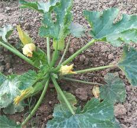
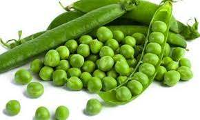

Zucchine
Coltivare in terreno molto ricco di materia prima e non coltivare dopo Solanacee o piante della stessa famiglia
- Varietà: zucchina chiara di Faenza
- Periodo di semina: Marzo, Aprile
- Primo raccolto: fine Aprile
- Ultimo raccolto: fine Luglio
- Raccolto:
Dimensione Quantità Piccole (10 cm) 16 Medie (11-16 cm) 26 Grandi (>16 cm) 9 51
Piselli
American Wonder: varietà media, precoce come ciclo colturale
Consigli
- Piantare un semenzaio riscaldato
- E' importante:
- Acquistare vasetti biodegradabili (di cocco o cartone)
- Mantenere areato il semenzaio per evitare muffe
- Non usare il coperchio del semenzaio
- Non mettere il semenzaio vicino al termosifone
- Fissare i sostegni nel terreno non appena le piantine raggiungeranno i 10 cm
- Acquistare una rete con spazi di non più di 10 cm per garantire sostegni adeguati